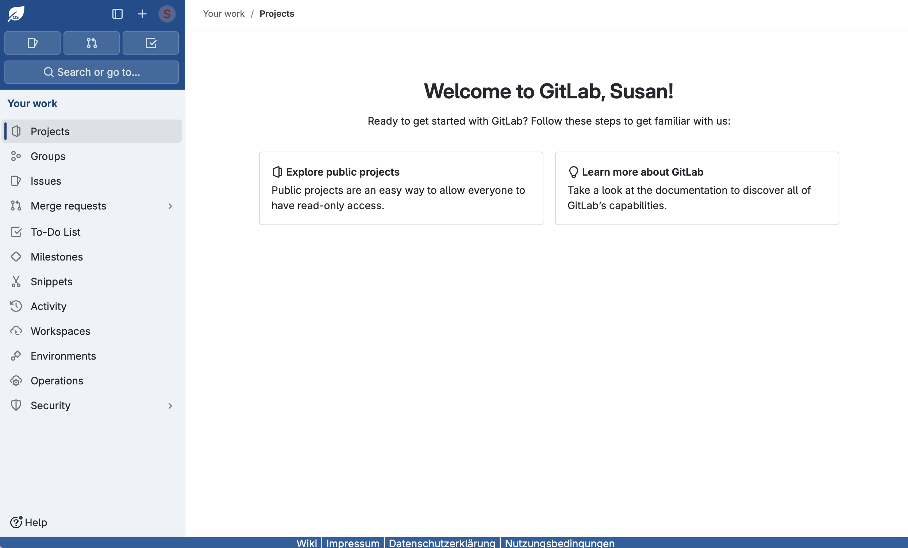
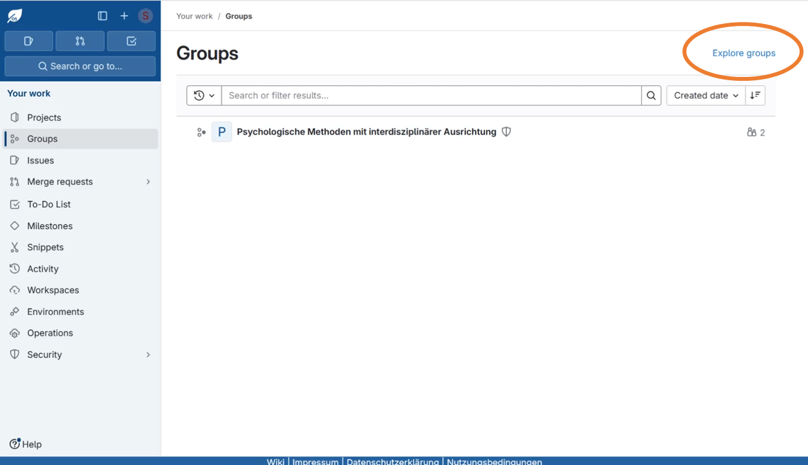
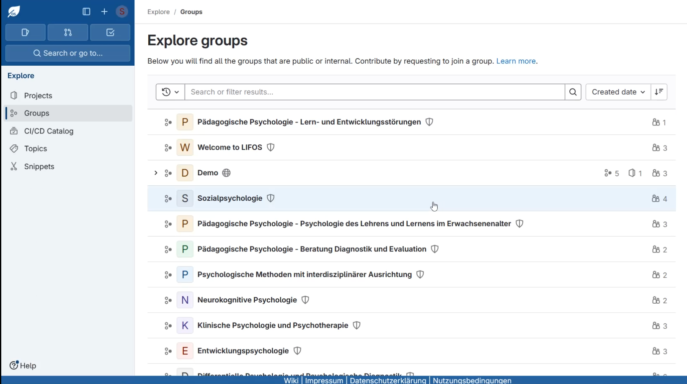
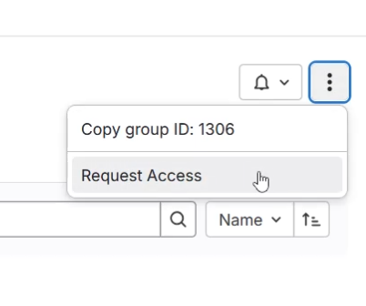
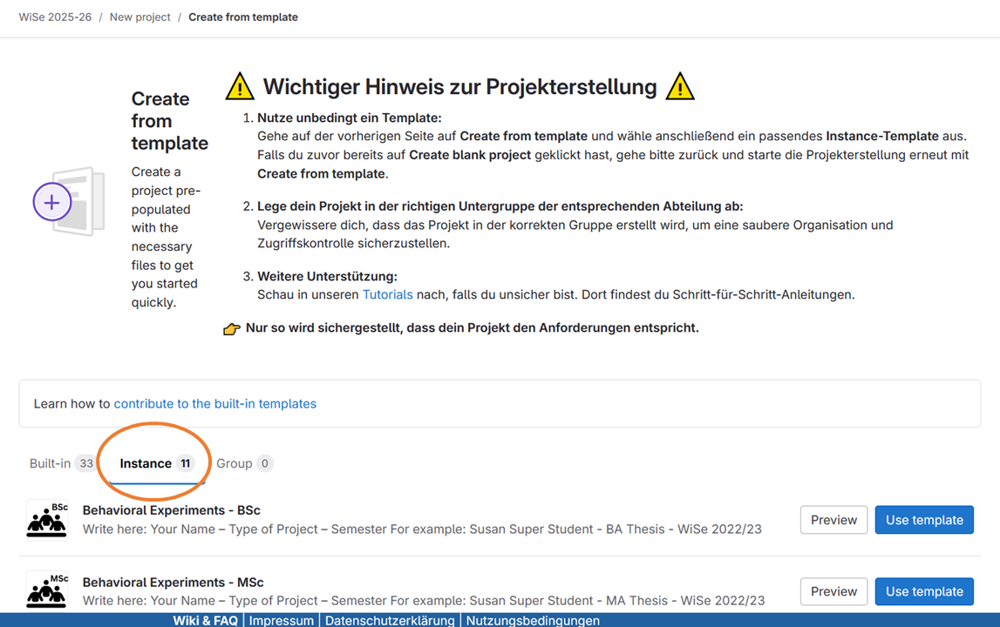
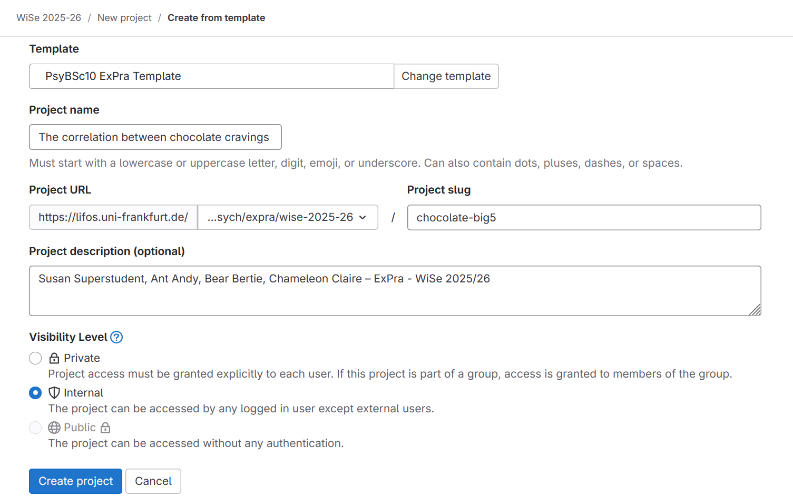
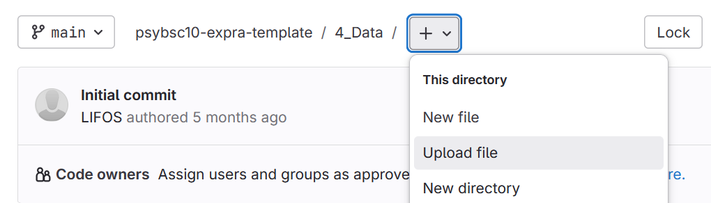

LIFOS#
LIFOS - that’s short for Local Infrastructure for Open Science Practices - is a platform created at the Department of Psychology at Goethe University, which we will use in the course of our EXPRA. Open Science practices help you to make the research process transparent and reproducible - both for yourself and for others.
This section will give you a quick introduction to the idea behind LIFOS and show you step by step how to get started on your EXPRA project. We will cover:
1. What is LIFOS and why do we use it?#
As a platform, LIFOS is there for you to implement open research practices (just like researchers do in their projects) in your own student research projects in a hands-on manner. You might have encountered it in previous courses, such as the Statistics I practicum, and may use it again for your Bachelor thesis.
By being open within the university, but closed to the public, LIFOS provides you with a safe practice environment. For example, if you make a mistake while uploading a data file, it’s not immediately going to be publicly available and out in the open. This should give you the confidence to familiarize yourself with open science practices confidently.
In principle, LIFOS emulates the Open Science Framework (OSF.io) and is built based on GitLab - originally a version control software. This is why some buttons and terms on the platform might seem unfamiliar at first. But don’t worry: There is also a variety of supporting content, such as a wiki & FAQ or templates for different study types, available to help you out with any questions in the process.
Tip
Take a look at other students’ projects and theses in LIFOS. As more students use the platform to document their empirical work, it develops into a sustainable archive of studies from past semesters and years. This growing body of knowledge can inspire your own work and provide valuable insights into the research done at our department.
2. What do we expect in the EXPRA?#
As active participation in the research project is part of the coursework for this module, there are a few requirements for using LIFOS that apply in EXPRA. Specifically, we ask you to complete the following actions on LIFOS:
As a group:
Create a project
Complete a preregistration
Upload your project materials (e.g., stimuli, anonymized data, codebook)
Individually:
Upload data analysis script
Voluntary: Upload final project report (anonymized, if you wish)
Note that sharing your materials is part of the grading criteria. For further instructions also see the section ../general_information/student-guide/#requirements-and-expectations General Information About EXPRA of this guide.
3. Getting started: Create your LIFOS group project in 5 simple steps#
By the time you start working with LIFOS in the EXPRA, you should ideally have completed the following steps:
learned about Open Science practices or read the respective section [link] of this guide,
formed a student group in which you will conduct your EXPRA study,
started thinking about the pre-registration of your study project.
When you’re ready, proceed with the next steps!
1. Login#
To access the platform, simply go to https://lifos.uni-frankfurt.de and use your university login credentials (HRZ username and password) to access the platform. If you log in for the first time, your LIFOS account is automatically created.
Once you are logged in, your landing page should look something like this:

Whenever you want to navigate back to this landing page, simply click on the LIFOS logo in the upper left corner.
LIFOS is based on the GitLab platform, so it is actually an instance of GitLab. Therefore, there are some buttons inherited from GitLab that we will not need, and that you can ignore. Two elements are particularly important for us: Groups and Projects.
2. Find your group#
First, let’s take a look at groups. Groups are the central organizational units in LIFOS in which the projects are structured. On the 1st level you will always find the department, within which you will then find subgroups for the respective course types or modules.
If you click on “Groups” in the left sidebar, you will see all groups of which you are already a member. To join new groups, you then need to click on “Explore Groups” in the upper right corner.

If this is your first time on LIFOS, no groups will be displayed here yet.
Now, find your EXPRA group for the current semester (WiSe 2025-26) by following these steps:
Click on Explore Groups to view all available groups. This should look like this:
Select your department, e.g., if you take part in the Social Psychology EXPRA (Sozialpsychologie), click on this group.
Select the module PsyBsc10 Empirisch-experimentelles Praktikum (Expra).
Select the current semester, e.g., WiSe 2025-26.
This is the group that will be home to your EXPRA projects.
3. Request access#
As you have learned by now, anyone can view things on LIFOS, but not everybody can edit everything. In order to modify contents within the group, you need to be a member of it.
Therefore, navigate to the upper right corner of the group, click on “…” and then on Request access.
Then your lecturer has to grant you access to the group. This may take a few minutes if you do it in class. Once this is done, just refresh the window. Now you possess the necessary permissions to proceed with the next step: creating the project!
4. Create your EXPRA project#
The project is a repository where you will upload and document your preregistration, materials, data, analysis code, and possibly your final reports.
Only one person per group needs to execute the following steps to create a project. Once created, all other members of the group will be able to view and edit it. To make it easier for you to create projects, predefined project templates are stored in the LIFOS instance. We will use the EXPRA Template.
To create a project from the EXPRA template, follow these steps:
Click on Create new project
Select the panel Create from Template (Important: NOT “Create blank project”!).
Select the tab Instance:
Scroll down to find the PsyBSc10 ExPra Template.
Click on Use template.
Enter the project properties#
You are now able to input your project’s key information.
Important
Once you’ve chosen a title and project description, you unfortunately won’t be able to edit it yourself. Only your lecturer or a LIFOS admin has the necessary permissions to change key project details. Therefore, take your time to think of a meaningful name for your project now - but if anything changes, you may change it later by asking your lecturer.
An example of the project properties for a project named “The correlation between chocolate cravings and Big 5 Personality” can look like this:

Please make sure not to change the visibility level (keep it Internal)!
Tip
Additional tips:
Enter the names of every student in your group, your course name and semester for standardized documentation and clarity.
A project slug is the URL ending that is auto-generated from your title. Consider making it shorter (e.g., “chocolate-big5” instead of the full title) to make linking to your project easier later.
Once you’re done, click Create project. Congratulations! Now you can start working within your newly-created project.
5. Start working on the project#
Edit the README#
Among the first things you will see when you scroll down within your project is the description text below, which is actually the content of the README.md file. A README file is a simple markdown document (a file with a .md ending) which - as the name suggests - is there to be read first and provide some information on what is in the repository. Like a short tutorial, it explains all parts of the project and what to think about when using them.
Within this tutorial, you will also find a “ToDo” list. To fulfill the second task on the list, “Change the title of this README to your group project title”, you’ll need to edit the “README.md” file.
To edit, follow these steps:
Click on the file name README.md.
Click on the blue Edit button.
In the dropdown menu, select Edit single file (this is the easiest option).
Now you can edit the document and replace the first line # Template - PsyBSc10 - ExPra [replace this with your own title] with your project title after the #.
We have already mentioned above that GitLab - the platform on which LIFOS is built - is particularly suitable for version control. Therefore, it offers a function to make transparent for others what exactly you changed in your last edit with the Commit message. We encourage you to make generous use of this!
Once you’re done with editing and your commit message, click on Commit changes to save the document. Your change is now saved!
Important
Don’t rename the file name of the “README.md”! GitLab expects this filename in order to preview the text on the project landing page. Therefore please stick to only changing the contents of the file.
See also
If you want to learn or to look up how text is formatted in Markdown documents, the website Markdownguide.org provides a number of helpful resources. We recommend taking a look at the Basic Syntax overview, and the Markdown cheat sheet.
In the same vein, you can also navigate to the folder Preregistration and the file AsPredicted_preregistration.md in order to complete your preregistration assignment.
Upload files#
Later on, when you want to upload materials, anonymized data or your code into your project, you can do this by navigating inside the respective folder, clicking on the plus sign in the upper part of the window, and selecting Upload file.

A window will then appear in which you will be able to select the file. Finally, modify the Commit message if needed and upload the file by clicking on Commit. Et voilà!
4. Further remarks and resources#
General tips and examples#
Feel free to make generous use of the README to document your project. Replace the tutorial text with your own information. Once you’re done, you could upload your abstract here, for example.
The goal is to have it be understandable and transparent for any readers, such as your fellow group members or your lecturer, when they assist you with your projects and later grade them, but also for future students who might look at your project next year.
When documenting your projects, ask yourself:
If I didn’t know anything about the research I’m looking at, what would make it easy for me to quickly understand what it’s about?
If I would like to reproduce the analysis (e.g., as your lecturer might), would I be able to do so with the instructions provided?
Projects that can serve as examples:
Example EXPRA project 2 (in older projects, the preregistration used to be uploaded as a PDF)
Data protection & privacy#
It is crucial that before you upload your data to LIFOS, it needs to be anonymized first! Please take special note of the data protection guidelines, and refer to the checklist (link to German version) below before uploading data to LIFOS:
Have all personal data been removed from the dataset?
Have all irrelevant variables (e.g., not relevant for the analysis or automatically collected) been removed from the dataset?
Are there unique values in variables or combinations of variables that could lead to re-identification of participants?
Does the dataset contain structures that increase the risk of identification (see LINK), and would it be better to share the dataset only upon request (“Data available upon request”) to protect participants?
Could a participant be harmed if they were re-identified in the dataset (e.g., through blackmail involving the disclosure of sensitive data)?
Important
If you completed your EXPRA study as an online survey using SoSciSurvey and the SONA platform, make sure to remove the SONA ID (usually stored as the “REF” variable by SoSciSurvey) from the final data set, since it can be uniquely matched to a person and thus violates anonymity!
We further recommend removing age and gender entirely from data sets before uploading if they are not part of the research question.
5. Helpful links#
If you want to look up anything described herein in more detail or have further questions, have a look at our comprehensive LIFOS Wiki.
The basics of Markdown syntax provide a great reference guide for editing Markdown files.
Decision tree for choosing the right LIFOS template (helpful for later, e.g., for your thesis)
If you are a lecturer or supervisor looking for guidance, refer to the LIFOS FAQ for supervisors.
If you have further questions, please feel free to contact the LIFOS project & admin team anytime at LIFOS@uni-frankfurt.de.
… and for now, good luck with your project!
Acknowledgments
This section was contributed by Tatiana Kvetnaya.